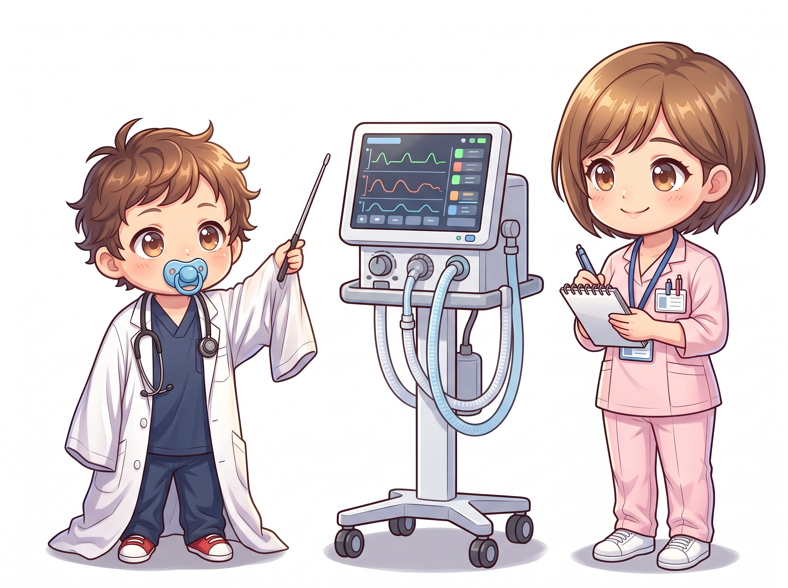
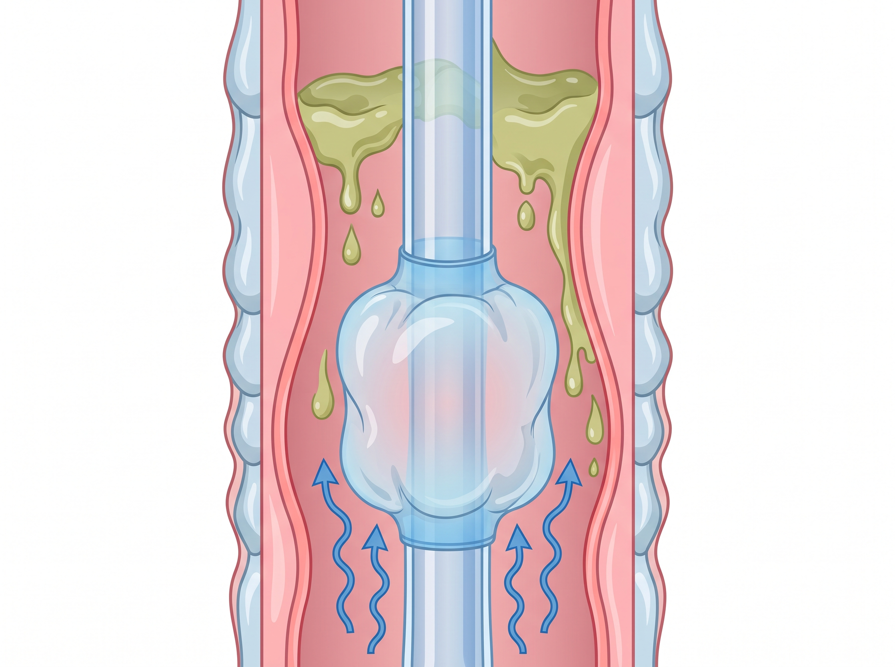
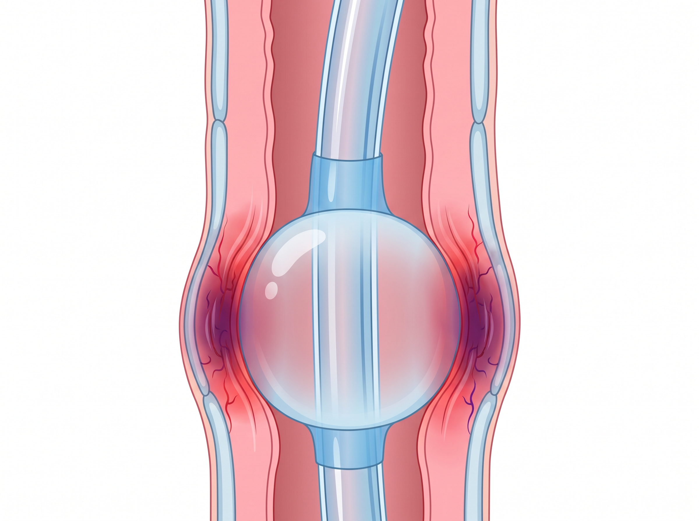
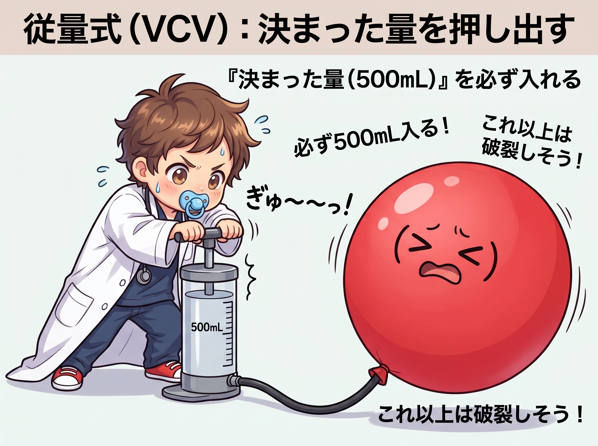
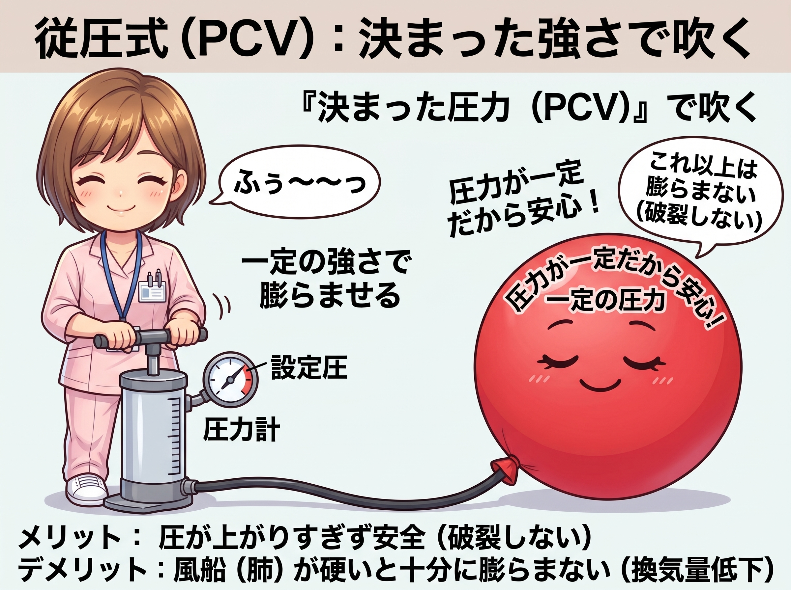
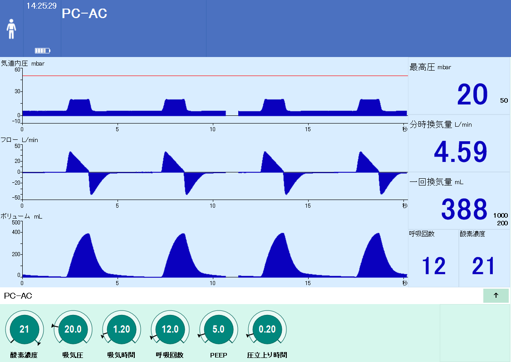

第1部
呼吸生理
呼吸生理
陰圧と陽圧
第2部
機器点検
機器点検
安全・カフ圧
第3部
換気モード
換気モード
波形 ★重点
第4部
アラーム対応
アラーム対応
原因特定 ★重点
第5部
血ガス・離脱
血ガス・離脱
P/F比・pH
第6部
まとめ・実践
まとめ・実践
基準値早見表


CE＆看護師：「人工呼吸器は『非生理的な陽圧換気』を行うため、メリットとデメリットが表裏一体！順番に確認していきましょう！」

人工呼吸の「良い側面」（メリット）
① 確実なガス交換の維持
十分な酸素を取り込み、不要な二酸化炭素を排出して低酸素血症やアシドーシスを改善します。
② 呼吸筋の休息と酸素消費の軽減
呼吸器が仕事を代行することで、疲弊した呼吸筋を休ませ、全身のエネルギー消費を抑えます。
③ PEEP（呼気終末陽圧）による肺胞の保護
息を吐いた時も肺が潰れるのを防ぎ、無気肺の予防と酸素化能の劇的な向上をもたらします。
人工呼吸の「悪い側面」（デメリット・合併症）
① 人工呼吸器関連肺傷害（VALI）
過剰な圧や換気量により肺胞が損傷し、気胸や炎症などの深刻な肺傷害を招く恐れがあります。
② 循環動態（血圧・心臓）への抑制作用
胸腔内が陽圧になることで心臓への還流血液量が減り、血圧低下や肝・腎機能の低下を招きます。
③ 呼吸筋の萎縮（VIDD）とPICS
過剰なサポートは数日で横隔膜を萎縮させ、退院後の身体・認知機能障害（PICS）の原因にもなります。
| 点検項目 | 内容（確認のポイント） |
|---|---|
| 電源接続の確認 | 人工呼吸器および加温加湿器の電源が非常用電源（赤・緑）に接続されているか？また抜けかかっていないか？（人工呼吸器本体側の電源も確認） |
| 酸素の接続確認 | 酸素の配管が確実に接続（ロック）されているか？「シュー」というガス漏れの異音はないか？ |
| 呼吸回路の確認 | 呼吸回路の接続の確認、回路破れやコネクター類の破損・緩みはないか？ |
| カフ圧の確認 | カフリークの有無およびカフ圧の確認（適正範囲：25〜30 cmH2O） |
| 換気条件の設定 | 換気設定（モード・FiO2・換気回数・PEEP等）が医師の指示通りか確認 |
| 実測値の確認 | 異常な換気（換気量低下・気道内圧上昇・頻呼吸など）になっていないか？ |
| 換気動作の確認 | 患者の胸の動き（左右対称な挙上）、異常な動作音がないか確認 |

看護師：「電源や配管から始まって、回路→カフ圧→画面→最後に患者さんの胸の動きまで、上から順番に指差し確認するルーティンを作れば見落としが防げますね！」


❌ 低すぎる場合 ［< 25 cmH₂O］
- 隙間からのガスリークによる換気量低下。
- カフ上の汚染分泌物が気管内へ垂れ込む。
- 結果：人工呼吸器関連肺炎（VAP）の最大原因！
現在の気管内カフ状態
✅ 適正範囲 (25〜30 cmH₂O)：気管壁に優しく密着
15 (低圧)
適正 25〜30
45 (高圧)
❌ 高すぎる場合 ［> 30 cmH₂O］
- 気管粘膜の毛細血管（約25〜30mmHg）を圧迫。
- 結果：粘膜の血流阻害（虚血）・壊死・気管狭窄や気管断裂の原因となる！
CE：「✅ 適正範囲（28 cmH₂O）です！気管壁に優しく密着し、分泌物の垂れ込みも粘膜の虚血も防げています。この状態をキープしましょう！」


肺の状態切替シミュレーター：
特徴：1回換気量（Vt）と吸気流量が一定。気道抵抗や肺コンプライアンスに関わらず設定換気量を押し込む。
注意点：ARDSや痰閉塞で有効肺容積が減ると気道内圧が跳ね上がり、健常肺胞の過伸展（圧損傷）を招く。
従量式（VCV : Volume Control Ventilation）
特徴：最高気道内圧が一定（20 cmH₂O）。圧が上がりすぎず肺胞過伸展を防ぐ。自発呼吸と同調しやすい。
注意点：ARDSや痰閉塞でコンプライアンスが低下すると、1回換気量が減少（500→280mL）し低換気（CO₂貯留）となる。
従圧式（PCV : Pressure Control Ventilation）
CE講師：「VCVは『量を保証して圧が変動する注射器』、PCVは『圧を制限して換気量が変動する送風機』です！ステップを進めるか上部の切替ボタンを押してみてください！」
🔍 クリックで拡大

モニター画面の3大エリア
- 左エリア（3段波形）：
①気道内圧 (mbar) / ②フロー (L/min) / ③ボリューム (mL) - 右エリア（実測値パネル）：
最高圧 20 mbar、分時換気量 4.59 L/min、一回換気量 388 mL、呼吸回数 12、酸素濃度 21% - 下エリア（設定ダイヤル）：
FiO₂ 21% / 吸気圧 20.0 / 吸気時間 1.20s / 呼吸回数 12.0 / PEEP 5.0 / 圧立上り 0.20s
CE講師：「こちらがSavina 300の実機画面です！画面をクリックすると大きく拡大できます。3つのエリアを順番に見ていきましょう！」
大原則：アラーム発生時は、アラーム音を消すことではなく、
「患者要因」と「機械要因」の両面から原因を特定することが必須。
「患者要因」と「機械要因」の両面から原因を特定することが必須。
STEP 01｜FIRST
生体・フィジカル確認
患者のアセスメント
- 自発呼吸の有無
- 呼吸音（左右差・副雑音）
- 努力呼吸・苦悶表情
- 鎮静レベル・バッキング
STEP 02｜SECOND
機械・ルート確認
回路・デバイスの点検
- 接続外れ・緩み
- リーク（カフ・回路）
- 閉塞（痰・人工鼻結露）
- チューブ屈曲・噛み込み
無呼吸 (Apnea)
設定時間、自発呼吸が感知（トリガー）されない状態。
原因
・自発呼吸減少、鎮静薬による呼吸抑制、トリガー感度が低い。
対応アクション・自発呼吸・鎮静の確認と薬剤調整。
・トリガー感度変更、モード変更（A/C等へ）、吸気圧・PS調整。
呼吸リズム波形モニター
呼吸数上昇 (Tachypnea)
呼吸数が設定上限を上回った状態（※自発呼吸や鎮静レベルの評価も同時に行う）。
原因
・呼吸努力の増加、低酸素血症、興奮・覚醒、呼吸筋疲労、ミストリガー（トリガー感度が高すぎる・回路内結露水）。
対応アクション・吸気圧・PS調整、FiO₂・PEEP調整、鎮静剤調整、補助換気回数増加。
・回路内水分除去、トリガー感度変更。
看護師：「呼吸リズムのアラームには『無呼吸（Apnea）』と『呼吸数上昇（頻呼吸）』の2つがあるんですね！順番に原因と対応を見てみましょう！」
✅ 正常バランス（pH 7.35〜7.45：酸塩基平衡）
💡 右パネルの [−] [+] で換気量を変えると、酸の球体量・天秤の傾き・デジタルpHが連動します
分時換気量 (MV) ＝ 1回換気量 (TV) × 呼吸回数 (RR)
分時換気量 (MV)
6.0 L/min
予測 PaCO₂
40 Torr
予測 pH
7.40
1回換気量 (TV)
50mL刻み (300〜750 mL)
500 mL
呼吸回数 (RR)
2回刻み (8〜24 回/min)
12 回/分
適正範囲です！この状態をキープしましょう。MV 6.0 L/min で PaCO₂ 40 Torr・pH 7.40 の美しい酸塩基バランスが保たれています。